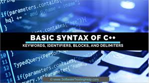
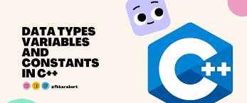
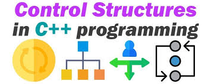

C++ Syntax Basics
Understand the basics of C++ syntax, including the use of semicolons, comments, and the structure of a C++ program. This is the foundation for writing efficient and readable C++ code.
1. Comments:
In C++, comments serve the same purpose as in Python: explaining code or making notes for better readability. C++ supports two types of comments:
Single-line comments: Start with //.
Multi-line comments: Enclosed within /* */.
2. Indentation:
In C++, indentation improves code readability but is not enforced by the compiler. Blocks of code are defined using curly braces {}, not indentation. However, consistent indentation is a best practice.
Watch this video on C++ Syntax Basics
Variables and Data Types
Learn how to declare variables and explore C++'s core data types, such as int (integers), float (floating-point numbers), string (text), and bool (true/false)
Variables:
A variable in C++ is a storage location in memory with a specific name and type, used to hold data that can be manipulated during the execution of a program.
Syntax:
data_type variable_name = value;
Example: int age = 25;
Watch this video on Variables and Data Types
Control Structures
Master the use of conditionals (if, elif, else) and loops (for, while) to control the flow of your programs effectively.
1. Sequential Control Structure: Executes instructions one after the other in the order they are written.
2. Decision-Making Control Structures:
if Statement: Executes code if a condition is true.
if-else Statement: Executes one block of code if a condition is true and another if it is false.
else-if Ladder: Tests multiple conditions in sequence.
switch Statement: Selects and executes one case out of multiple options based on a variable's value.
3. Looping Control Structures:
for Loop: Executes a block of code a specific number of times.
while Loop: Repeats a block of code as long as the condition is true.
do-while Loop: Executes the block of code at least once before checking the condition.
4. Jump Control Structures:
break: Terminates a loop or switch statement prematurely.
continue: Skips the current iteration of a loop and proceeds to the next.
goto: Transfers control to a labeled statement in the program.
Watch this video on Control Structures
Basic Programs
Write simple C++ programs such as Odd or Even Checker, Prime Number Checker, Fibonacci Sequence, Palindrome Checker.